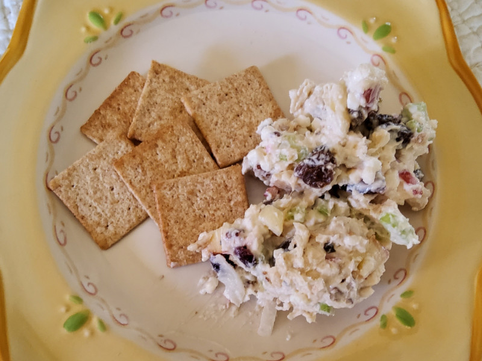

Healthy Chicken Salad
Original recipe by Yoly found here.

Description
This healthy chicken salad recipe is made with a mixture of Greek yogurt and cottage cheese instead of regular mayonnaise, resulting in a healthier version that's still creamy and delicious but higher in protein. Apples and dried cranberries add a sweet-tart flavor, while chopped pecans provide textural interest in every bite. Serve it on crackers, on a croissant, in a pita, or grab a fork and just dig in!
Ingredients
- 1 ((6 ounce) container fat-free Greek yogurt
- 1/2 cup low-fat cottage cheese
- 1/2 cup chopped celery
- 1/2 cup diced apple
- 1/4 cup sweetened dried cranberries
- 2 tablespoons chopped onion
- 2 tablespoons chopped pecans
- 1/2 tablespoon Dijon mustard
- 1 1/4 cups cubed, cooked chicken
- salt and ground black pepper to taste
Instructions
- Stir Greek yogurt, cottage cheese, celery, apple, cranberries, onion, pecans, and Dijon mustard in a bowl until well combined. Mix in cooked chicken. Season with salt and pepper.